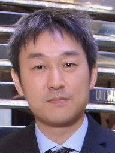

Japanese | English

伊藤信貴 (博士)
東京大学大学院 新領域創成科学研究科 複雑理工学専攻
特任講師
n.ito(at)k.u-tokyo.ac.jp
リンク
興味のある研究テーマ
機械学習、信号処理、マイクロホンアレー、ブラインド音源分離、複数ターゲットトラッキング
経歴
- 1999.04 - 2002.03 千葉県立東葛飾高等学校普通科(卒業)
- 2003.04 - 2005.03 東京大学教養学部理科Ｉ類(修了)
- 2005.04 - 2007.03 東京大学工学部計数工学科システム情報工学コース(卒業)
- 2007.04 - 2009.03 東京大学大学院情報理工学系研究科システム情報学専攻修士課程(修了)
- 2009.04 - 2012.03 東京大学大学院情報理工学系研究科システム情報学専攻博士課程(修了)
- 2009.09 - 2010.08 日仏共同博士課程 派遣学生 (仏INRIA Rennesに滞在し、Rémi Gribonval博士、Emmanuel Vincent博士を訪問)
- 2010.04 - 2012.03 日本学術振興会 特別研究員
- 2012.04 - 2017.06 日本電信電話株式会社コミュニケーション科学基礎研究所メディア情報研究部信号処理研究グループ 研究員
- 2017.07 - 2020.06 日本電信電話株式会社コミュニケーション科学基礎研究所メディア情報研究部信号処理研究グループ 研究主任
- 2019.03 - 2020.03 Visiting Industrial Fellowとして英ケンブリッジ大学に海外赴任し、Simon Godsill教授を訪問
- 2020.07 - 2021.01 日本電信電話株式会社コミュニケーション科学基礎研究所メディア情報研究部信号処理研究グループ 主任研究員
- 2021.02 - 現在 東京大学大学院新領域創成科学研究科複雑理工学専攻 特任講師
学位
- 2007.3 東京大学 学士(工学)
- 2009.3 東京大学 修士(情報理工学)
- 2012.3 東京大学 博士(情報理工学)
学会活動
- IEEE Audio and Acoustic Signal Processing (AASP) Technical Committee (TC) Member (2020 -)
- IEEE Audio and Acoustic Signal Processing (AASP) Technical Committee (TC) EDICS Subcommittee Vice Chair (2020 -)
- 国際会議EUSIPCO 2020にてtutorial (2021)
- 国際会議ICASSP2021にてarea vice chair (2021)
- 国際会議ICASSP2020にてsession chair (2020)
- 音源分離国際コンペfourth/fifth/sixth/seventh community-based Signal Separation Evaluation Campaign (SiSEC2013/2015/2016/2018)運営委員
- 国際会議EUSIPCO2017にて招待講演 (2017)
- 国際会議EUSIPCO2015にて招待講演 (2015)
- 国際会議LVA/ICA2010 Local Organisation Committee Member (2010)
- IEEE関西支部Young Professionals Affinity Group (2014 - Committee member、2017 - Treasurer)
- 電子情報通信学会 応用音響研究会 (2017 - 2018 幹事補佐、2018 - 研究専門委員)
- 2018年電子情報通信学会総合大会 プログラム編成委員 (2018)
- 2017年電子情報通信学会ソサイエティ大会 プログラム編成委員 (2017)
- 日本音響学会関西支部 若手研究者交流研究発表会 実行委員 (2013 - 2016)
- 日本音響学会 春季/秋季研究発表会 副座長
- 次のジャーナルの査読者：IEEE Trans. ASLP, IEEE SPL, ASJ, IEICE, 他
- 次の国際会議の査読者：ICASSP, EUSIPCO, IWAENC, 他
受賞
- 日本応用数理学会 論文賞 (2009)
- IWAENC 2018 Best Paper Award (2018)
- IEEE Signal Processing Society Japan Chapter Student Paper Award (2011)
-
日本音響学会 独創研究奨励賞板倉記念 (2015)
-
日本音響学会 粟屋潔学術奨励賞 (2018)
- ASRU 2015 Best Paper Award Honorable Mention (2015)
- 日本電信電話株式会社先端技術総合研究所 所長表彰 (2017)
- 日本電信電話株式会社コミュニケーション科学基礎研究所 所長表彰 (2019)
- 日本電信電話株式会社コミュニケーション科学基礎研究所 所長表彰 (2016)
- 日本電信電話株式会社コミュニケーション科学基礎研究所 所長表彰 (2014)
-
日本音響学会 学生優秀発表賞 (2011)
-
日本音響学会関西支部 若手研究者交流研究発表会 最優秀奨励賞 (2011)
教育実績
- インターン生指導（Christopher Schymura 2018.2 - 2018.3, 牧野孝史 2017.7 - 2017.8, 橋本裕太 2017.7 - 2017.8, Juan Azcarreta 2017.1 - 2017.8, Mahmoud Fakhry 2015.11 - 2016.4, 板倉光佑 2015.8, 手嶋優風 2014.8, Ingrid Jafari 2013)
- 同志社大学理工学部嘱託講師「特別講義B」(2020年度)
研究資金獲得歴
- 科学研究費補助金特別研究員奨励費(代表者)、対称性に基づくアレイ信号処理に関する研究(1,400千円、2010-2011年度)
資格
- 一般財団法人国際ビジネスコミュニケーション協会 TOEIC Institutional Program (IP) 990点 (2012.11.20)
- 公益財団法人日本英語検定協会 実用英語技能検定１級 (2013.3.1)
所属学会
- IEEE (Senior Member)
- 日本音響学会
発表文献
原著論文
- N. Ito, R. Ikeshita, H. Sawada, and T. Nakatani, "A Joint Diagonalization Based Efficient Approach
to Underdetermined Blind Audio Source Separation Using the Multichannel Wiener Filter," submitted to IEEE/ACM Trans. Audio, Speech, and Language Processing (ASLP). [arXiv] (under review)
- N. Ito and S. Godsill, "A Multi-Target Track-Before-Detect Particle Filter Using Superpositional Data in Non-Gaussian Noise," IEEE Signal Processing Letters, vol. 27, pp. 1075 - 1079, 2020. [arXiv]
- T. Higuchi, N. Ito, S. Araki, T. Yoshioka, M. Delcroix, and T. Nakatani, "Online MVDR Beamformer Based on Complex Gaussian Mixture Model with Spatial Prior for Noise Robust ASR," IEEE/ACM Trans. Audio, Speech, and Language Processing (ASLP), vol. 25, no. 4, pp. 780 - 793, Apr. 2017. [IEEE Xplore]
- M. Delcroix, T. Yoshioka, A. Ogawa, Y. Kubo, M. Fujimoto, N. Ito, K. Kinoshita, M. Espi, S. Araki, T. Hori, and T. Nakatani, "Strategies for Distant Speech Recognition in Reverberant Environments," EURASIP Journal on Advances in Signal Processing, DOI: 10.1186/s13634-015-0245-7, 2015.
[Springer]
- N. Ito, E. Vincent, T. Nakatani, N. Ono, S. Araki, and S. Sagayama, "Blind Suppression of Nonstationary Diffuse Acoustic Noise Based on Spatial Covariance Matrix Decomposition," Journal of Signal Processing Systems, vol. 79, no. 2, pp. 145 - 157, May 2015. [Springer]
(招待論文：invited journal extension of a conference paper)
- 伊藤信貴, 荒木章子, 木下慶介, 中谷智広, "音源位置情報に基づく劣決定ブラインド音源分離のためのパーミュテーションフリークラスタリング法," 電子情報通信学会論文誌 A, vol. J97-A, no. 4, pp. 234 - 246, Apr. 2014. [IEICE]
(招待論文)
- N. Ito, H. Shimizu, N. Ono, and S. Sagayama, "Diffuse Noise Suppression Using Crystal-Shaped Microphone Arrays," IEEE Trans. Audio, Speech, and Language Processing (ASLP), vol. 19, no. 7, pp. 2101 - 2110, Sep. 2011. [IEEE Xplore]
(IEEE Signal Processing Society Japan Chapter Student Paper Award; 独創研究奨励賞 板倉記念)
- 小野順貴, 伊藤信貴, 和泉洋介, 嵯峨山茂樹, "理想時間周波数マスキングの分離性能と音源スパース性の関係," 電子情報通信学会論文誌A, vol. J92-A, no. 5, pp. 305 - 313, May 2009. [IEICE]
- 伊藤信貴, 奈良高明, 櫻井鉄也, "複素モーメントに基づく画像特徴抽出," 日本応用数理学会論文誌, vol. 18, no. 1, pp. 135 - 153, Apr. 2008. [CiNii]
(日本応用数理学会 論文賞)
書籍
- N. Ito, S. Araki, and N. Tomohiro, "Recent Advances in Multichannel Source Separation and Denoising Based on Source Sparseness," in Audio Source Separation, S. Makino, Ed., Springer, pp. 279 - 300, 2018. [Springer]
- M. Delcroix, T. Yoshioka, N. Ito, A. Ogawa, K. Kinoshita, M. Fujimoto, T. Higuchi, S. Araki, and T. Nakatani, "Multichannel Speech Enhancement Approaches to DNN-Based Far-Field Speech Recognition," in New Era for Robust Speech Recognition, S. Watanabe, M. Delcroix, F. Metze, and J.R. Hershey, Eds., Springer, pp. 21 - 49, 2017. [Springer]
- 伊藤信貴, "音源分離について教えてください," 音響学入門ペディア, 日本音響学会編, コロナ社, pp. 40 - 43, 2017. [コロナ社]
解説論文
- 中谷智広, 伊藤信貴, 樋口卓哉, 荒木章子, 木下慶介, "遠隔発話音声認識のための複数マイクを用いた雑音残響抑圧," 騒音制御, vol. 42, no. 1, pp. 16 - 19, Feb. 2018. (招待論文)
- 伊藤信貴, 荒木章子, 中谷智広, "どんな環境でも聞きたい音を聞き分ける," 日本音響学会誌, vol. 71, no. 3, pp. 136 - 142, Mar. 2015. (招待論文)
国際会議チュートリアル
- N. Ito and H. Sawada, "A Unified Framework for Underdetermined and Determined Blind Audio Source Separation," tutorial at EUSIPCO 2020, Jan. 2021.
国際会議論文 (査読有)
- R. Ikeshita, N. Ito, T. Nakatani, and H. Sawada, "Independent Low-rank Matrix Analysis with Decorrelation Learning," Proc. IEEE Workshop Applications of Signal Processing to Audio and Acoustics (WASPAA), pp. 283 - 287, Oct. 2019.
- R. Ikeshita, N. Ito, T. Nakatani, and H. Sawada, "A Unifying Framework for Blind Source Separation Based on a Joint Diagonalizability Constraint," Proc. European Signal Processing Conf. (EUSIPCO), Sep. 2019. [IEEE Xplore]
- H. Sawada, R. Ikeshita, N. Ito, and T. Nakatani, "Computational Acceleration and Smart Initialization of Full-rank Spatial Covariance Analysis," Proc. European Signal Processing Conf. (EUSIPCO), Sep. 2019. [IEEE Xplore]
- N. Ito and T. Nakatani, "FastMNMF: Joint Diagonalization Based Accelerated Algorithms for Multichannel Nonnegative Matrix Factorization," Proc. IEEE Int'l Conf. Acoustics, Speech, and Signal Processing (ICASSP), pp. 371 - 375, May 2019. [IEEE Xplore]
- N. Ito and T. Nakatani, "Multiplicative Updates and Joint Diagonalization Based Acceleration for Under-Determined BSS Using a Full-Rank Spatial Covariance Model," Proc. IEEE Global Conf. Signal and Information Processing (GlobalSIP), pp. 231 - 235, Nov. 2018. [IEEE Xplore]
- N. Ito and T. Nakatani, "FastFCA-AS: Joint Diagonalization Based Acceleration of Full-Rank Spatial Covariance Analysis for Separating Any Number of Sources," Proc. IEEE Int'l Workshop Acoustic Signal Enhancement (IWAENC), pp. 151 - 155, Sep. 2018. [IEEE Xplore] (IWAENC 2018 Best Paper Award)
- Y. Matsui, T. Nakatani, M. Delcroix, K. Kinoshita, N. Ito, S. Araki, and S. Makino, "Online Integration of DNN-Based and Spatial Clustering-Based Mask Estimation for Robust MVDR Beamforming," Proc. IEEE Int'l Workshop Acoustic Signal Enhancement (IWAENC), pp. 71 - 75, Sep. 2018. [IEEE Xplore]
- N. Ito, S. Araki, and T. Nakatani, "FastFCA: Joint Diagonalization Based Acceleration of Audio Source Separation Using a Full-Rank Spatial Covariance Model," Proc. European Signal Processing Conf. (EUSIPCO), pp. 1681 - 1685, Sep. 2018. [EURASIP]
- N. Ito, C. Schymura, S. Araki, and T. Nakatani, "Noisy cGMM: Complex Gaussian Mixture Model with Non-Sparse Noise Model for Joint Source Separation and Denoising," Proc. European Signal Processing Conf. (EUSIPCO), pp. 1676 - 1680, Sep. 2018. [EURASIP]
- F.-R. Stöter, A. Liutkus, and N. Ito, "The 2018 Signal Separation Evaluation Campaign," Proc. Int'l Conf. Latent Variable Analysis and Signal Separation (LVA/ICA), pp. 293 - 305, Jul. 2018. [Springer]
- N. Ito, T. Makino, S. Araki, and T. Nakatani, "Maximum-Likelihood Online Speaker Diarization in Noisy Meetings Based on Categorical Mixture Model and Probabilistic Spatial Dictionary," Proc. IEEE Int'l Conf. Acoustics, Speech, and Signal Processing (ICASSP), pp. 546 - 550, Apr. 2018. [IEEE Xplore]
- J. Azcarreta, N. Ito, S. Araki, and T. Nakatani, "Permutation-Free cGMM: Complex Gaussian Mixture Model with Inverse Wishart Mixture Model Based Spatial Prior for Permutation-Free Source Separation and Source Counting," Proc. IEEE Int'l Conf. Acoustics, Speech, and Signal Processing (ICASSP), pp. 51 - 55, Apr. 2018. [IEEE Xplore]
- T. Higuchi, K. Kinoshita, N. Ito, S. Karita, and T. Nakatani, "Frame-by-Frame Closed-Form Update for Mask-Based Adaptive MVDR Beamforming," Proc. IEEE Int'l Conf. Acoustics, Speech, and Signal Processing (ICASSP), pp. 531 - 535, Apr. 2018. [IEEE Xplore]
- N. Ito, S. Araki, and T. Nakatani, "Data-Driven and Physical Model-Based Designs of Probabilistic Spatial Dictionary for Online Meeting Diarization and Adaptive Beamforming," Proc. European Signal Processing Conf. (EUSIPCO), pp. 1165 - 1169, Sep. 2017. [IEEE Xplore]
(招待論文)
- S. Araki, N. Ito, M. Delcroix, A. Ogawa, K. Kinoshita, T. Higuchi, T. Yoshioka, D. Tran, S. Karita, and T. Nakatani, "Online Meeting Recognition in Noisy Environments with Time-Frequency Mask Based MVDR Beamforming," Proc. Joint Workshop on Hands-free Speech Communication and Microphone Arrays (HSCMA), pp. 16 - 20, Mar. 2017. [IEEE Xplore]
- N. Ito, S. Araki, M. Delcroix, and T. Nakatani, "Probabilistic Spatial Dictionary Based Online Adaptive Beamforming for Meeting Recognition in Noisy and Reverberant Environments," Proc. IEEE Int'l Conf. Acoustics, Speech, and Signal Processing (ICASSP), pp. 681 - 685, Mar. 2017. [IEEE Xplore]
- T. Nakatani, N. Ito, T. Higuchi, S. Araki, and K. Kinoshita, "Integrating DNN-Based and Spatial Clustering-Based Mask Estimation for Robust MVDR Beamforming," Proc. IEEE Int'l Conf. Acoustics, Speech, and Signal Processing (ICASSP), pp. 286 - 290, Mar. 2017. [IEEE Xplore]
- A. Liutkus, F.-R. Stöter, Z. Rafii, D. Kitamura, B. Rivet, N. Ito, N. Ono, and J. Fontecave, "The 2016 Signal Separation Evaluation Campaign," Proc. Int'l Conf. Latent Variable Analysis and Signal Separation (LVA/ICA), pp. 323 - 332, Feb. 2017. [Springer]
- M. Fakhry, N. Ito, S. Araki, and T. Nakatani, "Modeling Audio Directional Statistics Using a Probabilistic Spatial Dictionary for Speaker Diarization in Real Meetings," Proc. IEEE Int'l Workshop Acoustic Signal Enhancement (IWAENC), DOI: 10.1109/IWAENC.2016.7602903, Sep. 2016. [IEEE Xplore]
- N. Ito, S. Araki, and T. Nakatani, "Complex Angular Central Gaussian Mixture Model for Directional Statistics in Mask-Based Microphone Array Signal Processing," Proc. European Signal Processing Conf. (EUSIPCO), pp. 1153 - 1157, Sep. 2016. [IEEE Xplore]
- N. Ito, S. Araki, and T. Nakatani, "Modeling Audio Directional Statistics Using a Complex Bingham Mixture Model for Blind Source Extraction from Diffuse Noise," Proc. IEEE Int'l Conf. Acoustics, Speech, and Signal Processing (ICASSP), pp. 465 - 468, Mar. 2016. [IEEE Xplore]
- T. Higuchi, N. Ito, T. Yoshioka, and T. Nakatani, "Robust MVDR Beamforming Using Time-Frequency Masks for Online/Offline ASR in Noise," Proc. IEEE Int'l Conf. Acoustics, Speech, and Signal Processing (ICASSP), pp. 5210 - 5214, Mar. 2016. [IEEE Xplore]
- T. Yoshioka, N. Ito, M. Delcroix, A. Ogawa, K. Kinoshita, M. Fujimoto, C. Yu, W.J. Fabian, M. Espi, T. Higuchi, S. Araki, and T. Nakatani, "The NTT CHiME-3 System: Advances in Speech Enhancement and Recognition for Mobile Multi-Microphone Devices," Proc. IEEE Workshop Automatic Speech Recognition and Understanding (ASRU), pp. 436 - 443, Dec. 2015. [IEEE Xplore]
(ASRU 2015 Best Paper Award Honorable Mention)
- N. Ito, S. Araki, and T. Nakatani, "Permutation-Free Clustering of Relative Transfer Function Features for Blind Source Separation," Proc. European Signal Processing Conf. (EUSIPCO), pp. 409 - 413, Aug. 2015. [IEEE Xplore]
(招待論文)
- N. Ono, Z. Rafii, D. Kitamura, N. Ito, and A. Liutkus, "The 2015 Signal Separation Evaluation Campaign," Proc. Int'l Conf. Latent Variable Analysis and Signal Separation (LVA/ICA), pp. 387 - 395, Aug. 2015. [Springer]
- M. Delcroix, T. Yoshioka, A. Ogawa, Y. Kubo, M. Fujimoto, N. Ito, K. Kinoshita, M. Espi, S. Araki, T. Hori, and T. Nakatani, "Defeating Reverberation: Advanced Dereverberation and Recognition Techniques for Hands-Free Speech Recognition," Proc. IEEE Global Conf. Signal and Information Processing (GlobalSIP), pp. 522 - 526, Dec. 2014. [IEEE Xplore] (招待論文)
- N. Ito, S. Araki, T. Yoshioka, and T. Nakatani, "Relaxed Disjointness Based Clustering for Joint Blind Source Separation and Dereverberation," Proc. IEEE Int'l Workshop Acoustic Signal Enhancement (IWAENC), pp. 268 - 272, Sep. 2014. [IEEE Xplore]
- M. Delcroix, T. Yoshioka, A. Ogawa, Y. Kubo, M. Fujimoto, N. Ito, K. Kinoshita, M. Espi, T. Hori, T. Nakatani, and A. Nakamura, "Linear Prediction-Based Dereverberation with Advanced Speech Enhancement and Recognition Technologies for the REVERB Challenge," Proc. REVERB Workshop, May 2014. [REVERB Workshop]
- N. Ito, S. Araki, and T. Nakatani, "Probabilistic Integration of Diffuse Noise Suppression and Dereverberation," Proc. IEEE Int'l Conf. Acoustics, Speech, and Signal Processing (ICASSP), pp. 5167 - 5171, May 2014. [IEEE Xplore]
- N. Ono, Z. Koldovský, S. Miyabe, and N. Ito, "The 2013 Signal Separation Evaluation Campaign," Proc. IEEE Int'l Workshop Machine Learning for Signal Processing (MLSP), DOI: 10.1109/MLSP.2013.6661988, Sep. 2013. [IEEE Xplore]
- N. Ito, E. Vincent, N. Ono, and S. Sagayama, "General Algorithms for Estimating Spectrogram and Transfer Functions of Target Signal for Blind Suppression of Diffuse Noise," Proc. IEEE Int'l Workshop Machine Learning for Signal Processing (MLSP), DOI: 10.1109/MLSP.2013.6661984, Sep. 2013. [IEEE Xplore] (invited to journal extension)
- I. Jafari, N. Ito, M. Souden, S. Araki, and T. Nakatani, "Source Number Estimation Based on Clustering of Speech Activity Sequences for Microphone Array Processing," Proc. IEEE Int'l Workshop Machine Learning for Signal Processing (MLSP), DOI: 10.1109/MLSP.2013.6661990, Sep. 2013. [IEEE Xplore]
- J. Thiemann, N. Ito, and E. Vincent,
"The Diverse Environments Multi-channel Acoustic Noise Database (DEMAND): A
Database of Multichannel Environmental Noise Recordings,"
Proc. Mtgs. Acoust., vol. 19, DOI: 10.1121/1.4799597, 2013.
- N. Ito, S. Araki, and T. Nakatani, "Permutation-Free Convolutive Blind Source Separation via Full-Band Clustering Based on Frequency-Independent Source Presence Priors," Proc. IEEE Int'l Conf. Acoustics, Speech, and Signal Processing (ICASSP), pp. 3238 - 3242, May 2013. [IEEE Xplore]
- N. Ito, E. Vincent, N. Ono, R. Gribonval, and S. Sagayama, "Crystal-MUSIC: Accurate Localization of Multiple Sources in Diffuse Noise Environments Using Crystal-Shaped Microphone Arrays," Proc. Int'l Conf. Latent Variable Analysis and Signal Separation (LVA/ICA), pp. 81 - 88, Sep. 2010. [Springer]
- N. Ito, N. Ono, E. Vincent, and S. Sagayama, "Designing the Wiener Post-Filter for Diffuse Noise Suppression Using Imaginary Parts of Inter-Channel Cross-Spectra," Proc. IEEE Int'l Conf. Acoustics, Speech, and Signal Processing (ICASSP), pp. 2818 - 2821, Mar. 2010. [IEEE Xplore]
- N. Ono, H. Kohno, N. Ito, and S. Sagayama, "Blind Alignment of Asynchronously Recorded Signals for Distributed Microphone Array," Proc. IEEE Workshop Applications of Signal Processing to Audio and Acoustics (WASPAA), pp. 161 - 164, Oct. 2009. [IEEE Xplore]
- Y. Kamamoto, N. Harada, T. Moriya, N. Ito, N. Ono, T. Nishimoto, and S. Sagayama, "An Efficient Lossless Compression of Multichannel Time-Series Signals by MPEG-4 ALS," Proc. IEEE Int'l Symposium Consumer Electronics (ISCE), pp. 159 - 163, May 2009. [IEEE Xplore]
- N. Ono, N. Ito, and S. Sagayama, "Five Classes of Crystal Arrays for Blind Decorrelation of Diffuse Noise," Proc. IEEE Sensor Array and Multichannel Signal Processing Workshop (SAM), pp. 151 - 154, Jul. 2008. [IEEE Xplore]
- N. Ito, N. Ono, and S. Sagayama, "A Blind Noise Decorrelation Approach with Crystal Arrays on Designing Post-Filters for Diffuse Noise Suppression," Proc. IEEE Int'l Conf. Acoustics, Speech, and Signal Processing (ICASSP), pp. 317 - 320, Apr. 2008. [IEEE Xplore]
- T. Nara, N. Ito, T. Takamatsu, and T. Sakurai, "Direct Computation of Harmonic Moments for Tomographic Reconstruction," Journal of Physics: Conference Series, vol. 73, DOI: 10.1088/1742-6596/73/1/012017, 2007. [IOPSCIENCE]
国際会議論文 (査読無)
- T. Nara, N. Ito, S. Ando, T. Takamatsu, and T. Sakurai, "Direct Computation of Harmonic Moments from Projections," The 6th Symposium of Mathematical Aspects of Image Processing and Computer Vision, Nov. 2006.
国内大会・研究会論文 (査読無)
- 伊藤信貴, 荒木章子, 中谷智広, "FastFCA：空間共分散行列の同時対角化に基づく時変複素ガウス分布を用いた音源分離法の高速化," 日本音響学会春季研究発表会講演論文集, pp. 427 - 430, 2018年.
- 伊藤信貴, 荒木章子, マーク・デルクロア, 中谷智広, "統計的空間辞書に基づくオンライン話者識別と適応ビームフォーミングによる複数人会話音声認識のための音声強調," 日本音響学会秋季研究発表会講演論文集, 2017年.
- 伊藤信貴, 荒木章子, 中谷智広, "混合複素角度中心ガウス分布を用いた方向統計量モデルに基づくブラインド音源分離," 日本音響学会秋季研究発表会講演論文集, 2017年. (粟屋 潔学術奨励賞)
- 荒木章子, 木下慶介, 伊藤信貴, 小川厚徳, デルクロア・マーク, 樋口卓哉, 吉岡拓也, チャン・ズン, 中谷智広, "雑音のある環境での複数人会話音声認識," 日本音響学会秋季研究発表会講演論文集, pp. 1265 - 1268, 2016年. (招待講演)
- 伊藤信貴, 荒木章子, ファクフリ・マフムド, 中谷智広, "統計的空間辞書を用いた方向統計量モデルに基づく複数人会話における話者識別," 日本音響学会秋季研究発表会講演論文集, pp. 321 - 324, 2016年.
- 峯松信明, 秋田祐哉, 浅見太一, 伊藤信貴, 落合翼, 郡山知樹, 齋藤大輔, 塩田さやか, 篠崎隆宏, 鈴木雅之, 高木信二, 俵直弘, 橋本佳, 樋口卓哉, 福田隆, "国際会議ICASSP2016参加報告," 情報処理学会研究報告, vol. 2016-SLP-112, no. 5, pp. 1 - 6, 2016年7月.
- 伊藤信貴, 荒木章子, 中谷智広, "混合複素ビンガム分布を用いた方向統計量モデルとブラインド拡散性雑音除去," 日本音響学会春季研究発表会講演論文集, pp. 629 - 630, 2016年.
- 樋口卓哉, 伊藤信貴, 吉岡拓也, 中谷智広, "時間周波数マスク推定に基づくオンラインMVDRビームフォーミング," 日本音響学会春季研究発表会講演論文集, pp. 559 - 560, 2016年.
- 中谷智広, 伊藤信貴, 樋口卓哉, 荒木章子, 吉岡拓也, 藤本雅清, 木下慶介, "NTT CHiME-3 音声認識システム：耐雑音フロントエンド," 日本音響学会春季研究発表会講演論文集, pp. 57 - 60, 2016年.
- 吉岡拓也, デルクロア・マーク, 小川厚徳, Yu Chengzhu, 伊藤信貴, 木下慶介, 藤本雅清, Fabian Wojciech, エスピ・ミケル, 樋口卓哉, 荒木章子, 中谷智広, "NTT CHiME-3 音声認識システム：全体構成とバックエンド," 日本音響学会春季研究発表会講演論文集, pp. 55 - 56, 2016年.
- 伊藤信貴, 荒木章子, 中谷智広, "パーミュテーションフリークラスタリングに基づくマルチチャネル雑音除去," 日本音響学会秋季研究発表会講演論文集, pp. 587 - 588, 2015年.
- 伊藤信貴, 荒木章子, 中谷智広, "クラスタリングに基づく音源分離と線形予測に基づく残響除去の確率論的モデル統合," 日本音響学会春季研究発表会講演論文集, pp. 547 - 548, 2015年.
- 伊藤信貴, 荒木章子, 中谷智広, "音源位置と音源アクティビティに基づく残響下・劣決定条件での音源数推定と音源分離," 日本音響学会秋季研究発表会講演論文集, pp. 521 - 522, 2014年.
- デルクロアマーク, 木下慶介, 吉岡拓也, 小川厚徳, 久保陽太郎, 藤本雅清, 伊藤信貴, エスピミケル, 堀貴明, 中谷智広, 中村篤, "残響下音声認識のための音声強調・認識技術:REVERBチャレンジにおけるNTT提案システムについて," 情報処理学会研究報告, vol. 2014-SLP-102, no. 5, pp. 1 - 4, 2014年7月.
- 伊藤信貴, 荒木章子, 中谷智広, "確率的モデル統合に基づく拡散性雑音と残響の同時ブラインド抑圧," 日本音響学会春季研究発表会講演論文集, pp. 667 - 668, 2014年.
- 伊藤信貴, ジャファリ・イングリッド, 荒木章子, 中谷智広, "音源アクティビティ系列のクラスタリングに基づく高残響・劣決定下音源数推定法," 電子情報通信学会技術研究報告, vol. 113, no. 242, pp. 17 - 21, 2013年10月.
- 伊藤信貴, 荒木章子, 中谷智広, "時変混合重みに基づくパーミュテーション問題のないクラスタリングベース音源分離," 電子情報通信学会技術研究報告, vol. 113, no. 28, pp. 7 - 12, 2013年5月.
- 伊藤信貴, エマニュエル・ヴァンソン, 小野順貴, レミ・グリボンヴァル, 嵯峨山茂樹, "トレースノルム最小化による行列補完に基づく拡散性雑音に頑健な複数音源定位," 日本音響学会春季研究発表会講演論文集, pp. 665 - 666, 2011年. (日本音響学会 学生優秀発表賞)
- 小野拓磨, 伊藤信貴, 宮部滋樹, 小野順貴, 嵯峨山茂樹, "分散型マイクロホンアレーを用いたブラインド音源分離とポストフィルタによる性能向上の検討," 日本音響学会春季研究発表会講演論文集, pp. 655 - 656, 2011年.
- 小野拓磨, 伊藤信貴, 宮部滋樹, 小野順貴, 嵯峨山茂樹, "マイクロホンのペア分散配置によるブラインド音源分離とポストフィルタによる性能向上の検討," 電子情報通信学会技術研究報告, vol. 110, no. 331, pp. 25 - 30, 2010年12月.
- 伊藤信貴, 北野佑, 小野順貴, 嵯峨山茂樹, "結晶型マイクロフォンアレイを用いた残響環境下における楽器音分離," 情報処理学会研究報告, vol. 2009-MUS-82, no. 3, pp. 1 - 6, 2009年12月.
- 伊藤信貴, 小野順貴, 嵯峨山茂樹, "チャネル間クロススペクトルの虚部に基づく小サイズのアレイによる拡散性雑音抑圧," 日本音響学会春季研究発表会講演論文集, pp. 705 - 706, 2009年.
- 河野仁, 伊藤信貴, 小野順貴, 嵯峨山茂樹, "音源とマイクロホンの空間位置及び受信信号時間原点のブラインドアラインメント," 日本音響学会春季研究発表会講演論文集, pp. 703 - 704, 2009年.
- 伊藤信貴, 小野順貴, 嵯峨山茂樹, "結晶型アレイを用いた実環境雑音抑圧の検討," 日本音響学会秋季研究発表会講演論文集, pp. 677 - 678, 2008年.
- 伊藤信貴, 小野順貴, 嵯峨山茂樹, "結晶型マイクロフォンアレイを用いたポストフィルタ設計に基づく拡散性雑音抑圧," 電子情報通信学会技術研究報告, vol. 108, no. 68, pp. 43 - 46, 2008年5月.
- 伊藤信貴, 小野順貴, 嵯峨山茂樹, "結晶型アレイを用いたポストフィルタリングに基づく拡散性雑音抑圧," 日本音響学会春季研究発表会講演論文集, pp. 695 - 696, 2008年.
- 荒木章子, 伊藤信貴, 澤田宏, 小野順貴, 牧野昭二, 嵯峨山茂樹, "周波数領域ICAにおける初期値の短時間データからの学習," 電子情報通信学会総合大会講演論文集, p. 208, 2008年3月.
- 小野順貴, 和泉洋介, 伊藤信貴, 嵯峨山茂樹, "統計モデルに基づく時変フィルタによる音源分離," 電子情報通信学会技術研究報告, vol. 107, no. 240, pp. 25 - 30, 2007年9月. (招待講演)
- 小野順貴, 河野仁, 清水光, 伊藤信貴, 嵯峨山茂樹, "等方的雑音場直交化のためのアレイ配置に関する群論的検討," 日本音響学会秋季研究発表会講演論文集, pp. 621 - 622, 2007年.
- 伊藤信貴, 小野順貴, 嵯峨山茂樹, "等方的雑音場における結晶型アレイを用いた非線形ビ−ムフォ−マ," 日本音響学会秋季研究発表会講演論文集, pp. 619 - 620, 2007年.
学会発表 (論文無)
- 伊藤信貴, 荒木章子, 中谷智広, "一般化固有値問題に基づく同時対角化の新しい応用：音源分離の高速化," 日本応用数理学会研究部会連合発表会, Mar. 2018.
- 伊藤信貴, 奈良高明, 櫻井鉄也, "画像およびその投影の複素モーメントについて," 日本応用数理学会研究部会連合発表会, Mar. 2007.
プレプリント
- N. Ito, E. Vincent, N. Ono, and S. Sagayama, "Robust Estimation of Directions-of-Arrival in Diffuse Noise Based on Matrix-Space Sparsity," Research Report, INRIA, RR-8120, hal-00746271, Oct. 2012.
- T. Nara, N. Ito, S. Ando, T. Takamatsu, and T. Sakurai, "Direct Computation of Harmonic Moments for Tomographic Reconstruction," Mathematical Engineering Technical Reports, the University of Tokyo, METR 2006-58, Nov. 2006.
特許
- 伊藤信貴, 中谷智広, 荒木章子, "信号分析装置、信号分析方法および信号分析プログラム," 特開2019-184773, 2019/10/24公開.
- 伊藤信貴, 中谷智広, 荒木章子, "信号分析装置、信号分析方法および信号分析プログラム," 特開2019-184747, 2019/10/24公開.
- 樋口卓哉, 伊藤信貴, 木下慶介, 荒木章子, 中谷智広, 齋藤翔一郎, 伊藤弘章, 小林和則, 原田登, "目的音声抽出方法、目的音声抽出装置及び目的音声抽出プログラム," 特開2019-45576, 2019/3/22公開.
- 小林和則, 伊藤弘章, 齋藤翔一郎, 原田登, 樋口卓哉, 伊藤信貴, 荒木章子, 木下慶介, 中谷智広, "音響信号処理装置、方法及びプログラム," 特開2019-029861, 2019/2/21公開.
- 小林和則, 伊藤弘章, 齋藤翔一郎, 原田登, 樋口卓哉, 荒木章子, 木下慶介, 伊藤信貴, 中谷智広, "音響信号処理装置、方法及びプログラム," 特開2019-028301, 2019/2/21公開.
- 伊藤信貴, 中谷智広, 荒木章子, "クラスタリング装置、クラスタリング方法及びクラスタリングプログラム,"特開2018-189994, 2018/11/29公開.
- 中谷智広, 伊藤信貴, 樋口卓哉, 荒木章子, 木下慶介, "マスク推定装置、マスク推定方法およびマスク推定プログラム," 特開2018-146610, 2018/9/20公開.
- 伊藤信貴, 中谷智広, 荒木章子, "ステアリングベクトル推定装置、ステアリングベクトル推定方法およびステアリングベクトル推定プログラム," 特開2018-141922, 2018/9/13公開.
- 齋藤翔一郎, 小林和則, 伊藤弘章, 原田登, 樋口卓哉, 荒木章子, 木下慶介, 伊藤信貴, 中谷智広, "音響信号処理装置、方法及びプログラム," 特許第6599408号, 2019/10/11登録.
- 伊藤信貴, 中谷智広, 荒木章子, "信号処理装置、信号処理方法および信号処理プログラム," 特許第6538624号, 2019/6/14登録.
- 伊藤信貴, 荒木章子, 中谷智広, "マスク推定装置、マスク推定方法及びマスク推定プログラム," 特許第6535112号, 2019/6/7登録 (国際公開第2017/141542号パンフレット, 2017/8/24公開).
- 中谷智広, 伊藤信貴, 樋口卓哉, 荒木章子, 吉岡拓也, "空間相関行列推定装置、空間相関行列推定方法および空間相関行列推定プログラム," 特許第6434657号, 2018/11/16登録 (国際公開第2017/094862号パンフレット, 2017/6/8公開).
- 伊藤信貴, 中谷智広, 荒木章子, "クラスタリング装置、クラスタリング方法及びクラスタリングプログラム," 特許第6441769号, 2018/11/30登録.
- 伊藤信貴, 荒木章子, 中谷智広, "モデル推定装置、目的音強調装置、モデル推定方法及びモデル推定プログラム," 特許第6290803号, 2018/2/16登録.
- 伊藤信貴, 中谷智広, 荒木章子, "音源数推定装置、音源数推定方法および音源数推定プログラム," 特許6193823号, 2017/8/18登録.
- 伊藤信貴, 中谷智広, 荒木章子, "モデル推定装置、雑音抑圧装置、音声強調装置、これらの方法及びプログラム," 特許第6106611号, 2017/3/10登録.
- 伊藤信貴, 中谷智広, 荒木章子 "信号源数推定装置、信号源数推定方法及びプログラム," 特許第6082679号, 2017/1/27登録.
- 伊藤信貴, 中谷智広, 荒木章子, "モデル推定装置、音源分離装置、モデル推定方法、音源分離方法及びプログラム," 特許第6059072号, 2016/12/16登録.
学位論文
- "Robust Microphone Array Signal Processing against Diffuse Noise,"
博士論文, 東京大学, 2012年3月.
-
"Microphone Array Signal Processing for Diffuse Noise Suppression,"
修士論文, 東京大学, 2009年3月.
-
"画像およびその投影の複素モーメントに関する研究,"
学士論文, 東京大学, 2007年3月.